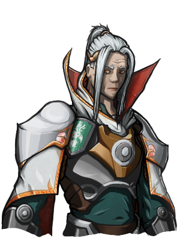

NPCs
Lord Albrek (Alias: Glasstaff)
Race: Human
Affiliation: (Formerly) Lords' Alliance
Traitor to Phandalin, masqueraded as Lord Albrek, ally of Sildar, but secretly worked for The Spider as the evil mage Glasstaff. Outed by the party just before the Attack on Phandalin, in which he was killed by The Spider's minions.
Artorious Kont

Race: Human
Affiliation: Lucavi Knights
Title: Archmage Champion
Archmage Champion overseeing the defense of Lucav. Artorious put out a call for mercenaries to kill a necromancer in the nearby hills, which the party answered. He revealed himself to be a vampire after Zieg detected that he is an undead creature. He sent the party to the Riovannes house on a mission and then tried to kill us, first by burning down the Riovannes house while we were inside, and then descending on the party and attacking us when we discovered his lair.
Sildar

Race: Human
Affiliation: The Lords' Alliance
Friend of Gundren Rockseeker. The party rescued him from the Cragmaw goblin cave, and he sided with us when we revealed his "friend" Lord Albrek to be the traitor, Glasstaff. We fought beside him in the Attack on Phandalin. He has since become Multimodal's protection fighting mentor.
Na'Zandar (Alias: The Spider)
Race: Eladrin
Affiliation: ???
An Eladrin who returned to Phandalin to try and reclaim lands that he alleges were stolen from his people (consistent with historical records). Involved in human trafficking for a mysterious purpose, and the use of necromantic arts of some kind. He tried to persuade us to join his cause in Wave Echo Cave, but we adamantly refused. We decided he was too dangerous to allow to live, and put him out of our misery.
Sir Razak Guldarzadarian
Race: Dragonborn
Affiliation: The Lords' Alliance
High-ranking member of The Scarlet Vigil. Met the party in Phandalin and was persuaded by evidence to believe our account of events in Phandalin and at Tresendar Manor. He fought with us in the Attack on Phandalin as well. Asked us to join the war against the orcs coming from the Fetid Tangle. Was bested by orcs at Elk's Crossing and was rescued by one of the fisherfolk to the east. Reunited with the party in Ashmore en route back to Elspire.
Rockseekers
Race: Dwarf
Affiliation: The Porters' Guild
Gundren Rockseeker
Hired our party to help him find and access a mysterious lost mine. Was later kidnapped in the keep of King Grol until we rescued him. His brothers were missing at the time. We ventured to Wave Echo Cave with him to find his brothers, and the lost mine.
Tharden Rockseeker
Brother of Gundren Rockseeker, reported missing and later discovered dead in Wave Echo Cave.
Nundro Rockseeker
Brother of Gundren Rockseeker. Was reported missing, held captive by The Spider in Wave Echo Cave, and later reunited with his brother Gundren.